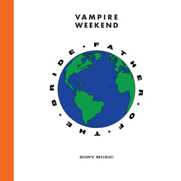

I’m always a bit relunctant to write “End of Year” lists, since I’m hardly an authority on musical taste. I’m not a musician by any stretch of the imagination, nor have I ever really attempted to learn an instrument, so I wouldn’t say I could accurately judge the technical qualities of the albums either.
Then there is the whole creative aspect of the matter. How can one measure something that is inherently creative? Isn’t creativity in and of itself subjective and a product of the environment one is exposed to?
So rather, this list is a reflection of the music that I enjoyed most in 2019. Maybe I simply connect to these artists, their sounds, and their lyrics because I mirror them in some way, or because we’ve had similar life experiences. Or, for lack of more eloquent phrasing, the music just SOUNDS good to me.
There’s a similar stylistic thread that runs through my list that indicates changes in my musical preferences - a more stripped down, soft-spoken, songwriting-driven style. Interestly enough, eight of the artists on the list are led by female singer-songwriters (with one rap album thrown in between). There’s something about their voice that speaks to me more on an emotional level.
In any case, here are my favorite albums of 2019, in no particular order:
Julia Jacklin - Crushing
Weyes Blood - Titanic Rising
Big Thief - Two Hands
(an interesting note - I wasn’t the biggest fan of UFOF)
FKA Twigs - MAGDALENE

Lana Del Rey - Norman Fucking Rockwell

Stella Donnelly - Beware of the Dogs
Aldous Harding - Designer
Freddie Gibbs & Madlib - Bandana

Vampire Weekend - Father of the Bride

Billie Eilish - When We All Fall Asleep, Where Do We Go?

Honorable Mentions
- Vagabon - Vagabon
- Thom Yorke - Anima
- Bon Iver - i,i
- Nilüfer Yanya - Miss Universe
- Better Oblivion Community Center - Better Oblivion Community Center
- Faye Webster - Atlanta Millionaire’s Club
- Angel Olsen - All Mirrors
- Denzel Curry - ZUU
- James Blake - Assume Form
- Sharon van Etten - Remind Me Tomorrow